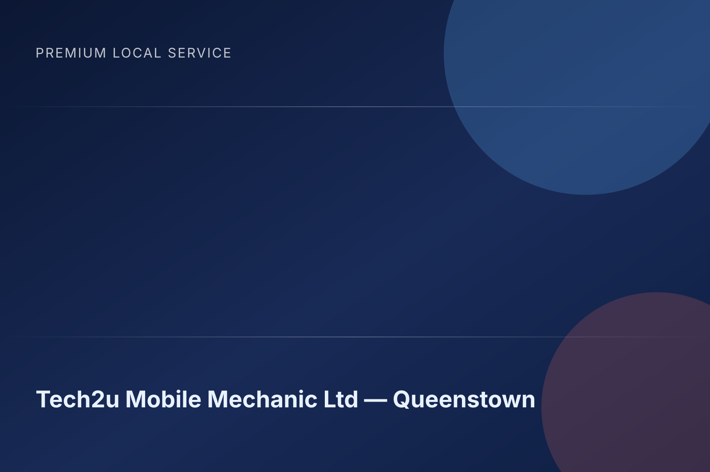

Diagnostics & servicing
Tech2u Mobile Mechanic Ltd delivers this across Queenstown and nearby areas.
Premium local mechanic support in Queenstown. Built around what customers value most: reliable, responsive, transparent.
Tech2u Mobile Mechanic Ltd delivers this across Queenstown and nearby areas.
Tech2u Mobile Mechanic Ltd delivers this across Queenstown and nearby areas.
Tech2u Mobile Mechanic Ltd delivers this across Queenstown and nearby areas.
Tech2u Mobile Mechanic Ltd delivers this across Queenstown and nearby areas.
Recent customer language trends: reliable, responsive, transparent, professional.
Location: 10 Shotover Street, Queenstown 9300, New Zealand
Phone: 0210 625 655
Category: Mechanic
“Malcom was amaaaazing!!! I wish I could leave him 1000 stars on here, because he’s a star 🌟 Literal life saver and such a stellar human ❤️🥹 On my first call to him when I was st...”
“I can’t recommend Malcom and team enough! He is super knowledgeable - what I thought to be a big issue he quickly diagnosed and fixed it in no time and got my car back up and ru...”
“Malcom is a top bloke! Came to fix an issue with my work van on such short notice and also fixed another issue that was found. Also gave me extensive knowledge about mechanical...”



Yes — Tech2u Mobile Mechanic Ltd supports jobs throughout Queenstown and surrounding areas.
Call 0210 625 655 and the team will confirm the fastest available slot.
Yes — jobs are scoped clearly upfront so there are no surprises.